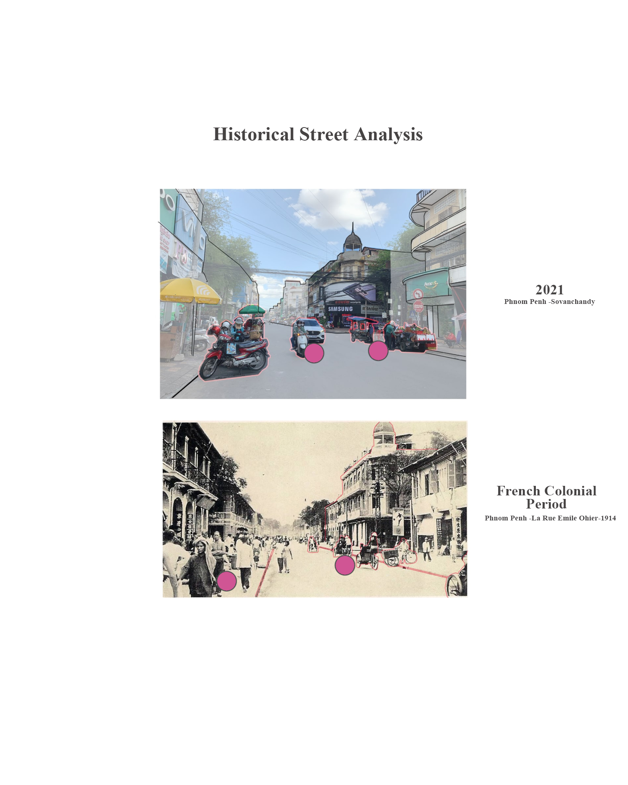

HOME
The Novel Coronavirus continues to ravage the world in 2021. In the Phnom Penh in Cambodia, the pandemic forces the closure of markets. The food vendors and independent traders have to sell the food on the street in order to make income in the absence of health care during pandemic.
Our research area focus is along Preah Ang Eng street due to the food vendors and buyers mainly doing their business on the street near Night Market, Old Market, Chinese School and Kandal Market. This disorganized and insecure behaviour can cause a series of consequences for the whole community, and the disorganized selling on the street has its own problems. In this research, food accessibility is an integral part of revitalizing the city, where street vendors are an adaptation which helps achieve this goal. Filed visits, including interviews with different groups of people and organization, are the main source of resource for frontline inspectors. The online research includes the regular website and literature collation and analysis, and through the specific search engine more narrow and efficient positing of relevant information. In conclusion, more effective management of trucking and voluntary organizations like local4local can help communities better cope with the problems of the epidemic while reducing the burden of gathering people.
In order to find the answer to the the purpose of Decentralisation of Vending in COVID times in Phnom Penh, we have created a question which we must answer to find
How has the pandemic led to Decentralization of food for people in the local market during the COVID Pandemic?
History
Below you can see a visual introduction to some history:

Do you know anything about History that you want to tell us about? Comment below, or visit the "ABOUT US AND CONTACTS" page if you want to contact us about having your information integrated into our website!